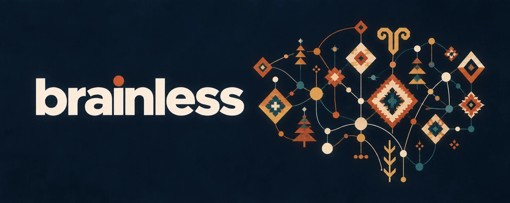

Open source · MIT · runs on your machineNotes arrive from everywhere, collect in one folder, link themselves to each other and come back to you when they are relevant. Then they argue with you.
curl -fsSL https://raw.githubusercontent.com/ezapmar/brainless-public/main/install.sh | bash
Collect everything without judging it. Let the machine read it and make the connections. Argue with what you are about to decide. Write the decision down as a bet, and settle it later.
Everything comes in through one door. A voice note, a photo of a handwritten page, a link, a PDF, a meeting transcript, a line typed on the phone. Nothing is tagged, filed or judged on the way in.
The machine reads it so you do not have to. Every note is summarised and tied to the people, companies and ideas it names. An idea that keeps coming back gets a page of its own, and every new source improves that page.
Six voices, each built from a book on thinking, test a thesis in two rounds. A moderator then writes the strongest objection, what would have to be true, and a cheap test with a date on it.
A decision is written as a bet, with a prediction and a review date. When the date passes you grade it in one line, so you stop being wrong the same way twice.
Each persona is built from one book on thinking. In the first round they work alone and vote. In the second they read each other, answer the strongest objection and vote again. They never speak to each other, so they cannot set each other off.
What is the conclusion, what are the reasons, what is left out, what else could be true.
Write it as a bet. How confident, in a number. Twelve months on, it failed. Why.
What must be true, what is the cheapest test, which result means stop and which means pivot.
If this fails, what kind of failure is it. Was the homework done. What is the smallest version.
Where to play, how to win, and with which capabilities.
What is the real question underneath, and what observation would prove it wrong.
If they start agreeing with you too often, a flag goes up. Six voices that always agree with you are a fan club.
No server, no account, nothing to sign up for. Your notes stay in your folder, in a format you could still open in twenty years. Obsidian if you like it, any editor if you do not.
Ollama on your own machine, or Anthropic, OpenAI, Gemini, Grok, OpenRouter, or the Claude, Codex and Gemini command lines. You pick it once during setup and change it whenever you like.
API keys go to the macOS Keychain, libsecret on Linux or Credential Manager on Windows. Never into the folder, because the folder is a git repository, and a git repository is where keys go to leak.
You own the source notes. The machine owns a wiki of summaries, concept pages and digests on top, and it can rebuild that layer from scratch at any time.
Longer pieces on Medium about the habits brainless forced on its author. Shorter, more technical articles on X about how it is built and what it runs on.
What a second brain promises, where mine broke, and the seven things I changed when I built my own.
Five months of building brainless, and what it taught me about taking notes, thinking clearly and making decisions.
The night shift runs on a 2019 ThinkBook with its lid closed. Four reasons for the operating system underneath, with the machine's own numbers.
articlebrainless, part 1 of 4. The problem, the goals, and a folder that started as a second brain.
article · seriesThe announcement. Capture, compile, search, the hardware, the six voices and decisions as bets, in one long post with the people whose work it stands on.
long postWhat the installer sets up. A folder of notes, the model you already use and one entry in the scheduler.
How the author runs it. Capture from the phone, an always-on Linux worker on the night shift, persona agents in a chat relay.
You need git and Python 3.11 or newer. The script sets up Python and the brainless command, then hands over to a short wizard: your name and language, notes you already have, the model, a test call, and one scheduler entry.
curl -fsSL https://raw.githubusercontent.com/ezapmar/brainless-public/main/install.sh | bash
irm https://raw.githubusercontent.com/ezapmar/brainless-public/main/install.ps1 | iex
If git or Python is missing: winget install Git.Git and winget install Python.Python.3.13, then open a new window.
In the office I kept saying "let us use our own brain first, then we can talk about a second brain", so when the folder needed a name I typed brainless. Not a second brain, zero brain. The joke carries the design rule anyway. The system keeps the memory and the connections; the thinking stays yours.